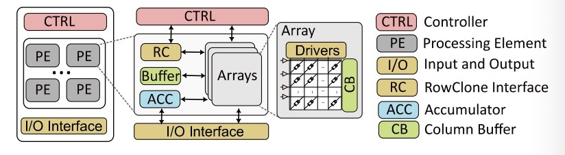
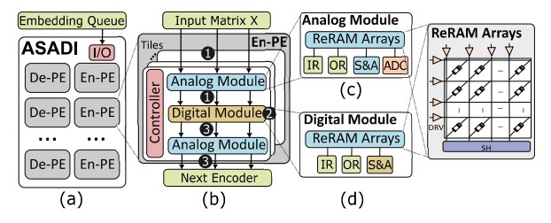
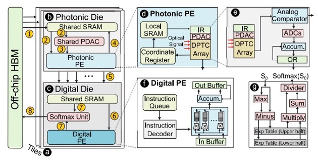
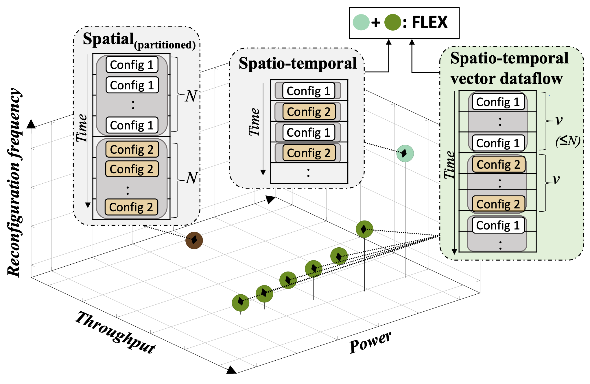
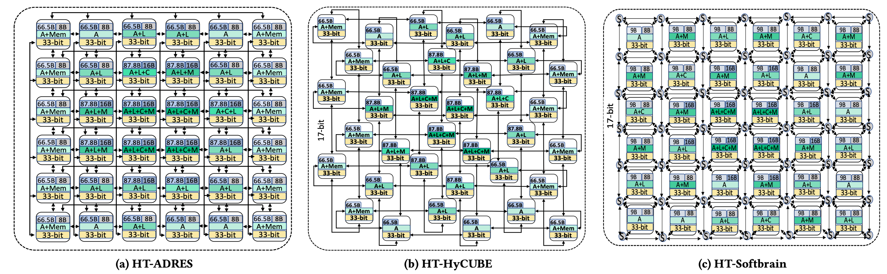
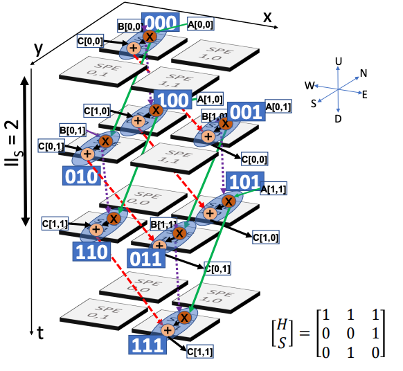
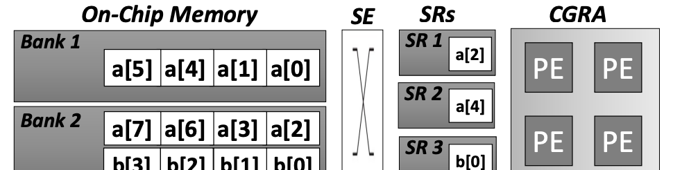

Canon
Canon is a data-driven parallel architecture that bridges the gap between highly specialized and fully programmable architectures. It introduces dynamic execution orchestration, where programmable finite-state machines translate runtime data into control, enabling fine-grained adaptation to irregular or sparse workloads.
Combined with time-lapsed SIMD execution to amortize control overhead, Canon sustains high utilization and deterministic performance across diverse kernels. Canon matches or exceeds the performance of domain-specific accelerators in their own specialization domains, including dense, structured, and unstructured sparse workloads, while retaining the flexibility of a general purpose architecture.
Key Innovations
- Dynamic execution orchestration via programmable FSMs
- Time-lapsed SIMD execution for control overhead reduction
- Matches domain-specific accelerators while retaining general-purpose flexibility

Plaid
Plaid is a novel Coarse-Grained Reconfigurable Array (CGRA) architecture and compiler that aligns compute and communication provisioning to overcome inefficiencies in existing CGRAs. Plaid identifies and exploits recurring dataflow motifs within applications to enable collective execution and routing, significantly improving hardware utilization.
By integrating a hierarchical on-chip network and motif-aware compiler, Plaid achieves a 43% power reduction and 46% area savings compared to high-performance spatio-temporal CGRAs, while maintaining performance and generality. Against energy-efficient spatial CGRAs, Plaid delivers 1.4× higher performance and 48% lower area. Plaid is a step toward balanced, general-purpose, and energy-efficient reconfigurable computing at the edge.
Key Achievements
- Aligns compute and communication provisioning via dataflow motifs
- 43% power reduction and 46% area savings vs. spatio-temporal CGRAs
- 1.4× higher performance than spatial CGRAs at 48% lower area

ZeD
ZeD develops techniques for efficiently handling the packing, storage, retrieval, and processing of variably sparse matrices in modern machine learning workloads. The work identifies fundamental limitations of prior compression techniques, showing how coordinate-based formats become increasingly inefficient as ML arithmetic precision decreases, due to overwhelming metadata overheads.
ZeD addresses this through a hierarchical bit-tree compression format and zero-detection hardware, enabling compact representation and dynamic zero skipping with minimal hardware cost. Furthermore, by analyzing sparsity patterns and reorganizing matrix rows based on their similarity, ZeD significantly enhances memory reuse. ZeD demonstrates a 3.2× improvement in performance per area over state-of-the-art solutions across a spectrum of ML workloads characterized by wide-ranging sparsities.
Technical Innovations
- Hierarchical bit-tree compression format with zero-detection hardware
- Matrix row reorganization for enhanced memory reuse
- 3.2× performance/area improvement across variable sparsity patterns

SWAT
SWAT is a scalable and energy-efficient FPGA-based accelerator designed to optimize window attention-based Transformer models. SWAT addresses the inefficiency of sliding window attention which reduces attention complexity from quadratic to linear but misaligns with traditional accelerator architectures by employing a dataflow-aware, input-stationary design that maximizes data reuse and minimizes redundant computation.
Through innovations like row-major dataflow, kernel fusion, and FIFO-managed buffering, SWAT aligns computation with the distributed memory and logic resources of FPGAs. The result is a 22× latency reduction and 5.7× energy efficiency improvement over baseline FPGA accelerators, and up to 15× higher energy efficiency than GPU-based implementations, making SWAT a powerful and scalable solution for long-context Transformer workloads across NLP and vision tasks.
Performance Gains
- Input-stationary dataflow maximizes data reuse for sliding window attention
- 22× latency reduction and 5.7× energy efficiency vs. baseline FPGAs
- 15× higher energy efficiency than GPU implementations

SPLIM
SPLIM is a novel Processing-using-memory (PUM) accelerator for sparse matrix-matrix multiplication (SpGEMM). It introduces a new computation paradigm for SpGEMM, namely the ELLPACK-based computation paradigm (ECP). ECP can perform in-situ structured vector multiplication with fewer zeros and higher hardware utilization, while the accumulation phase remains unstructured.
SPLIM adopts in-situ search operations for coordinates alignment, converting unstructured accumulation to highly parallel search operations. Compared with state-of-the-art GPU, ASIC, and PUM-based SpGEMM accelerators, SPLIM achieves 276×, 11.2×, and 3.9× performance improvement, respectively.
Key Innovations
- ELLPACK-based computation paradigm (ECP) for structured in-situ SpGEMM
- In-situ search operations convert unstructured accumulation to parallel searches
- 276× over GPU, 11.2× over ASIC, 3.9× over PUM accelerators

SADIMM
SADIMM is an innovative hardware-software co-designed near-memory-processing accelerator for sparse attention. On the hardware side, SADIMM employs heterogeneous NMP architectures by integrating distinct logic units across different hierarchies of DIMM. Different logic units are assigned to support corresponding operations, enhancing overall hardware efficiency.
On the software side, SADIMM adopts a dimension-based dataflow, partitioning input sequences based on model dimensions. By storing identical dimensions of all tokens in the same memory bank, it can efficiently support sparse attention with balanced loads. SADIMM exhibits remarkable performance and energy efficiency compared to state-of-the-art sparse attention accelerators.
Technical Innovations
- Heterogeneous NMP architectures across DIMM hierarchies
- Dimension-based dataflow with balanced load distribution
- Hardware-software co-design for efficient sparse attention

ASADI
ASADI is a novel in-situ computing accelerator for sparse attention. ASADI proposes a novel compression method that can efficiently compress various sparse attention to diagonal compression (DIA) format and introduce DIA-based sparse matrix computation paradigm to exploit the inherent diagonal locality.
To support the new DIA-based paradigm, ASADI presents a comprehensive architecture and dataflow utilizing in-situ computing, reducing on-chip transmission. ASADI achieves an average performance improvement of 18.6× and energy savings of 2.9× compared to a near-memory-processing based baseline.
Key Achievements
- Diagonal compression (DIA) format exploits diagonal locality in sparse attention
- In-situ computing reduces on-chip transmission
- 18.6× performance improvement and 2.9× energy savings

HyAtten
HyAtten is a photonic-based attention accelerator with minimal signal conversion overhead. The significant signal conversion overhead limits the performance of photonic-based accelerators. HyAtten incorporates a signal comparator to classify signals into two categories based on whether they can be processed by low-resolution converters.
HyAtten integrates low-resolution converters to process all low-resolution signals, thereby boosting the parallelism of photonic computing. For signals requiring high-resolution conversion, HyAtten uses digital circuits instead of signal converters to reduce area and latency overhead. Compared to the state-of-the-art photonic-based Transformer accelerator, HyAtten achieves a 9.8× improvement in performance-per-area and a 2.2× increase in energy-efficiency-per-area.
Performance Gains
- Hybrid photonic-digital design minimizes signal conversion overhead
- Low-resolution converters for high-parallelism signals, digital circuits for high-resolution
- 9.8× performance-per-area and 2.2× energy-efficiency-per-area improvement

Flex
Flex introduces a flexible spatio-temporal vector dataflow execution model, unifying the efficiency of spatial execution with the performance of spatio-temporal designs. By adaptively processing variable-length data vectors and chaining them across space and time, FLEX achieves the same performance as spatio-temporal CGRAs while consuming 45% less energy and offering 1.9× higher power efficiency.
Compared to spatial CGRAs, it delivers 1.5× higher throughput at 35% lower energy. Supported by a dedicated compiler and design space exploration framework, FLEX dynamically selects the optimal execution mode per application, enabling superior energy efficiency and versatility across diverse workloads.
Key Achievements
- Flexible spatio-temporal vector dataflow unifies spatial and spatio-temporal execution
- 45% energy reduction and 1.9× power efficiency vs. spatio-temporal CGRAs
- 1.5× throughput and 35% energy savings vs. spatial CGRAs

REVAMP
REVAMP is a systematic design-space exploration framework that enables architects to automatically introduce and optimize heterogeneity in traditionally homogeneous CGRAs. By jointly exploring compute, interconnect, and memory-level diversities alongside compiler co-design, REVAMP transforms uniform CGRAs into power- and area-efficient heterogeneous variants tailored to target application suites.
Demonstrated on three state-of-the-art CGRAs, REVAMP achieves up to 52.4% power, 38.1% area, and 36% average energy reduction with minimal performance loss.
Key Innovations
- Automatic heterogeneity introduction via design-space exploration and compiler co-design
- Joint exploration of compute, interconnect, and memory diversities
- 52.4% power, 38.1% area, 36% energy reduction with minimal performance loss

HyCUBE
HyCUBE introduces a novel CGRA architecture that breaks the limitations of traditional neighbor-to-neighbor connectivity by enabling single-cycle, multi-hop communication between distant functional units through a reconfigurable interconnect. This innovation allows efficient data movement without occupying compute resources, simplifying compilation and improving mapping quality.
The accompanying HyCUBE compiler leverages a new formulation of the mapping problem to exploit this dynamic connectivity, achieving near-optimal schedules with reduced compilation time. HyCUBE delivers up to 3× performance-per-watt improvement over conventional CGRAs and 1.5× over CGRAs with standard NoCs, marking a significant advancement in energy-efficient, programmable accelerator design for embedded and multimedia workloads.
Key Innovations
- Single-cycle, multi-hop reconfigurable interconnect breaks neighbor-to-neighbor limitations
- Novel compiler formulation achieves near-optimal schedules with reduced compilation time
- 3× performance-per-watt over conventional CGRAs, 1.5× over CGRAs with NoCs

PANORAMA
PANORAMA introduces a divide-and-conquer approach, combining global dataflow clustering with hierarchical mapping to manage large and irregular dataflow graphs effectively. By providing a panoramic, global view of application dataflows, the compiler achieves up to 2.6× higher throughput and 8.7× faster compilation compared to state-of-the-art CGRA mappers.
PANORAMA's modular design allows seamless integration with existing low-level mapping tools, making it a portable solution for accelerating complex workloads on large CGRAs.
Key Achievements
- Divide-and-conquer with global dataflow clustering and hierarchical mapping
- 2.6× higher throughput and 8.7× faster compilation vs. state-of-the-art
- Modular, portable design for seamless integration with existing tools


HiMap
HiMap employs a hierarchical abstraction that leverages the regularity of multi-dimensional computations through a Virtual Systolic Array (VSA). This two-level mapping — from the Iteration Space Dependency Graph to the VSA, and then to the physical CGRA — enables near-optimal performance and energy efficiency even on large CGRAs.
HiMap achieves up to 17.3× performance and 5× energy efficiency improvements over state-of-the-art methods, while reducing compilation time from days to under 15 minutes for 64×64 CGRAs. This work demonstrates that hierarchical, systolic-aware mapping can bridge the gap between scalability and high-quality compilation in reconfigurable computing.
Key Innovations
- Virtual Systolic Array (VSA) hierarchical abstraction for two-level mapping
- 17.3× performance and 5× energy efficiency improvements
- Compilation time reduced from days to under 15 minutes for 64×64 CGRAs

LISA
LISA is a novel compiler framework that leverages Graph Neural Networks to enable portable, high-quality mapping across diverse spatial accelerators such as CGRAs and systolic arrays. Unlike traditional handcrafted compilers that are labor-intensive and architecture-specific, LISA automatically learns the relationship between an application's dataflow graph structure and an accelerator's architectural characteristics.
By generating structural "labels" through GNN analysis and integrating them into a label-aware simulated annealing mapping process, LISA achieves an all-encompassing global view of computation and communication during mapping. Experimental results demonstrate that LISA significantly outperforms state-of-the-art compilers in mapping quality, compilation time, and portability, marking the first successful use of GNNs for spatial accelerator compilation.
Key Innovations
- First GNN-based compiler framework for portable spatial accelerator mapping
- Automatic learning of dataflow-architecture relationships via structural labels
- Superior mapping quality, compilation time, and portability across CGRAs and systolic arrays

CASCADE
CASCADE overcomes the data access bottleneck inherent in conventional CGRAs by fully decoupling memory access from computation. It introduces a decoupled access-execute model featuring a custom-designed Stream Engine for programmable multi-bank memory address generation and an automated compiler that ensures conflict-free data streaming between memory and compute arrays.
This holistic hardware–software co-design enables CASCADE to deliver up to 3× performance and 2.2× performance-per-watt improvements over iso-area conventional CGRAs, while significantly reducing compilation time. By seamlessly orchestrating memory and compute operations, CASCADE achieves near-ideal throughput for compute-intensive loop kernels, paving the way for more power-efficient, high-performance reconfigurable accelerators.
Key Innovations
- Decoupled access-execute model with Stream Engine for multi-bank memory orchestration
- Automated compiler ensures conflict-free data streaming
- 3× performance and 2.2× performance-per-watt over iso-area CGRAs